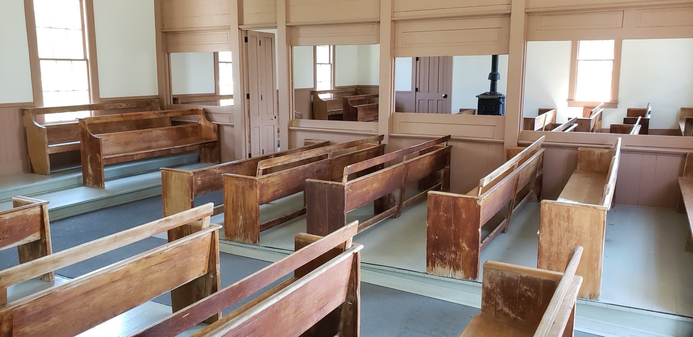

静默不是空白
贵格会 Meeting 的静默常常被误解为“清空头脑”。但传统中的 waiting 更接近带着期待的开放：人不必把念头清掉，也不急着跟随每个念头，而是让注意力逐渐从惯性反应中松开。
Brinton 在讨论 worship 时强调，与其说要消灭纷乱思想，不如说要“活在那超越它们的地方”。这使静默不是一种对心智的暴力控制，而是一种重新排序注意力的方式。

静默不是发生在真空里
这张 Meeting House 室内照片让一个抽象概念变得具体：人进入的不是“个人冥想隔间”，而是一个能看见彼此、共同承受静默的空间。历史上不同 Meeting House 的座位、隔断与礼仪安排并不相同，但“共同在场”一直是关键。
Pi3.124 · CC BY-SA 4.0 · 查看原始来源 ↗Silence → Waiting → Worship
Silence
外在声音减少，身体和注意力开始有空间。
Waiting
不只是没有讲话，而是期待某种尚未被制造出来的清晰。
Worship
等待带有关系性：我把自己置于 Light / Truth / God 的可能引领之下。
静默是外在条件；waiting 是内在姿态；worship 是关系与方向。
“等候”为什么不是一种注意力技巧？
如果只从心理训练看，waiting 很容易被理解成“延迟反应”或“保持开放”。这些描述有帮助，却还没有触到传统语境的全部。对早期 Friends 而言，等候之所以有方向，是因为他们相信 Divine Presence 并非缺席；人不是在制造启示，而是在学习停止遮蔽、停止抢先。
这也是为什么 Brinton 会说，Quaker worship 把“God reveals himself directly”这一信念推到实践层面：如果启示并非只属于过去，那么 worship 的基本动作就不是不断填充语言，而是 reverent waiting 与 listening。
进入Meeting 时，具体可以怎么做？
注意身体接触椅子、脚底、呼吸和房间里的声音。不要把“马上进入状态”变成新任务。
你可以知道它在，却不必完成它。计划、回忆、情绪都可以经过。
不是逼自己找答案，而是让问题在空间里待一会儿。
Meeting 不是私人练习。感受其他人的存在，不必想象他们在做什么。
让话语重新落回静默。它可能不是讨论的开端，而是共同聆听的一部分。
杂念怎么办？
最容易把初学者带偏的问题，就是：“怎样才能没有杂念？” Meeting 并不要求达到某种纯净意识状态。一个更实用的观察方式是：
我注意到了。
我已经在心里写完三封邮件。
不责备，重新感到身体、房间、等待。
某些念头退到背景，某些问题反而显出重量。
什么时候结束？
正式 Meeting 的结束方式因群体而异，常见做法是 designated Friends 握手，其他人随之握手，表示 worship 已结束。本站的练习采用轻微提示音，只是数字环境中的替代。
更重要的是：结束不意味着把静默留在房间。Thomas Kelly 的一个核心关切，正是让内在注意逐渐进入日常行动，使“内在圣所”成为工作日也可返回的参照。
从 inward life 到 workaday life
Thomas Kelly 反复强调，内在生命若只发生在固定的安静时段，仍然是不完整的。他所描述的是一种“同时生活在两层”的能力：表层继续工作、说话、做决定；更深一层保持对 Light 的注意。
这使 Meeting 的价值不在于把人从生活中抽离，而在于训练一种能够回到市场、办公室、家庭与公共事务中的注意方式。外在见证不是附加的“公益活动”，而是 inward attention 结出的果实。
试着这样观察下一次静默
我是在等“某件事发生”，还是在练习不预设会发生什么？
沉默里最难放下的是什么：控制、效率、表现、解释，还是被看见的需要？
如果我把今天一个真实处境带入 Light 中重新看，它的意义有没有发生一点变化？